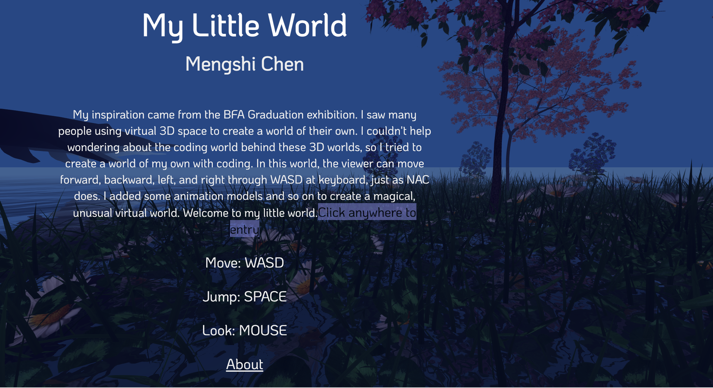

After studying traditional art for 5 years, Mengshi entered the digital media art area and began to explore the integration relationship between physical art, virtual art, data and traditional art. In the process of exploration, she tried to blend painting and projection and discovered a special obsession with glitch art. In the research of physical painting and new media art, Mengshi looked for emotional sustenance and lost her original intention in the process of searching for dreams. Because of the influence of the stereotypes of Asian families, she began to rethink the first purpose of choosing art and began to doubt herself. Mengshi decided to express her feelings in her art and hope that those who question her can find answers in her art. She uses TouchDesigner, projection mapping, video editing and modeling to express her feelings about things around her. One thing, a person or an environment.Mengshi Chen moved from southern China at the age of 18 to the United States, a place completely unfamiliar to her. She is completing her BFA degree in the Digital Media Art at San José State University. You can find me in
here.
In this website, you will enter my little world ---- the world that I imagined. The initial inspiration to create this world came from the exhibition held in New Art City. The theme of the whole world is the landscape of the “Yuan” world. I don't know if you've ever wondered if parallel worlds exist? In my imagination, there is an arcadia in the “Yuan” world. There are huge whales here. They can fly and they can dive. Beautiful flowers and trees grow in the sea. There is no pollution, no harm, a peaceful harmony. When people immerse themselves in this world, what do they think of? This is my imaginary world. I imagine I can fly on a whale, through clouds and oceans. Be free. There is no restraint, no pressure . I think this is the ideal I can not achieve in reality. Through this project, I think I explored the coding process behind the 3D world and also created a world belonging to me. At the same time, I want the audience to feel peaceful as they enter my world.
